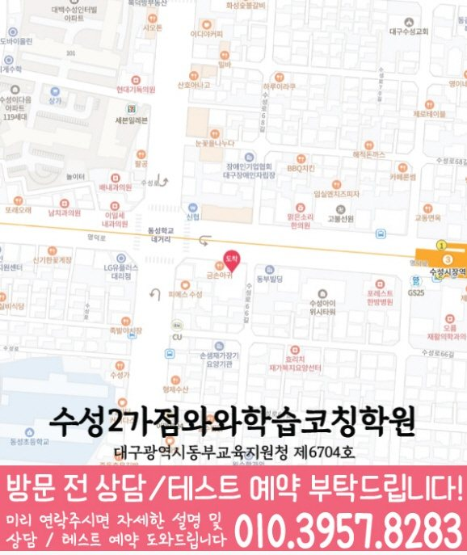

와와학습코칭센터 수성2가점
대구 수성구 명덕로 404 1동 404호 와와학습코칭학원
GRADE 11 MATH LOCAL GUIDE
고2 수학의 선택 과목·풀이 근거 점검 예시를 살펴보고 풀이와 질문을 정리해 보세요. 와와학습코칭센터 수성2가점의 자료상 가능 학년과 실제 방문 주소도 함께 확인할 수 있습니다.
현재 안내된 수학 가능 학년은 초4, 초5, 초6, 중1, 중2, 중3, 고1입니다. 고2 수학은 목록에 없어 수강 가능 여부를 별도로 확인해야 합니다.
대구 수성구 명덕로 404 1동 404호 와와학습코칭학원
수업 시간·반 편성·정원은 상담 시 확인
대구광역시동부교육지원청 제6704호
고등학교 참고: 경북고등학교, 대구남산고등학교
학교별 수업 개설 여부는 재학 학교와 학년을 알려 주고 확인해 주세요.
통합 상담 전화 010-6839-8283 · 문의할 때 와와학습코칭센터 수성2가점과 학생의 학년을 말씀해 주세요.
아래는 가정에서 활용하는 일반 학습 점검 예시입니다. 현재 학교·교재에서 배우는 내용에 해당할 때 활용하고, 아직 배우지 않은 내용은 현재 진도에 맞춰 확인해 주세요. 학생의 학습 수준과 센터의 실제 수업 구성은 상담에서 확인할 수 있습니다.
학교의 실제 과목명과 시험 범위를 적고, 교재에 나온 함수의 조건을 확인했나요?
직접 확인할 예 함수 연결을 배우는 범위라면 f(x) = 2x + 1, g(x) = x²에서 f(g(3)) = 19입니다. 안쪽 함수부터 계산한 순서와 각 함수의 정의역을 확인해 보세요.
현재 진도에 수열이 있다면 몇 번째 항인지와 규칙을 구별했나요?
직접 확인할 예 3, 7, 11, 15처럼 4씩 커지는 수열의 n번째 항은 4n − 1입니다. n = 1, 2를 넣어 규칙과 식이 같은지 확인해 보세요.
확률을 배우는 범위라면 전체 경우와 조건이 바뀌는 지점을 따로 적었나요?
직접 확인할 예 빨간 공 3개, 파란 공 2개에서 꺼낸 공을 돌려놓지 않고 두 번 뽑을 때 모두 빨강일 확률은 3/5 × 2/4 = 3/10입니다. 두 번째 전체 공 수가 줄어드는 이유를 설명해 보세요.
틀린 문제에서 놓친 조건, 처음 막힌 계산 줄, 답을 확인한 방법을 적어 보세요. 해설을 덮고 다시 풀 때 같은 줄에서 멈추는지 확인하고, 해결하지 못한 부분은 질문으로 남겨 주세요.
교재 이름·쪽수와 혼자 해결한 부분을 함께 표시하면 상담에서 현재 학습 상태를 설명하기 쉽습니다.
현재 과목명·교재·진도와 학교의 시험 범위표·수업 프린트를 준비하세요. 위의 학습 예시가 현재 배우는 범위에 해당하는지 대조하고 질문할 부분을 표시해 주세요.
계산 과정을 어디까지 설명해야 하는지, 오답의 이유를 어떻게 확인하는지, 다시 풀 문제와 결과를 어떻게 기록하는지 질문해 보세요.
고2 수학 수강 가능 여부는 위의 센터 정보에 따라 먼저 확인해야 합니다. 이 질문과 학습 예시는 센터의 확정된 수업 방식이나 제공 서비스를 뜻하지 않습니다.
현재 학교와 교재에서 배우는 내용에 해당할 때 활용하는 일반 학습 점검 예시입니다. 실제 수업 범위와 방식은 확정한 정보가 아니므로 현재 진도에 맞춰 상담에서 확인해 주세요.
현재 배우는 범위에 해당한다면 안쪽 함수의 입력과 출력부터 적고 바깥 함수에 넣은 값을 확인합니다. f(x)=2x+1, g(x)=x²에서 f(g(3))은 g(3)=9를 먼저 구한 뒤 f(9)=19로 계산합니다. 함수의 정의역도 함께 확인해 보세요.
확률을 배우는 범위라면 공을 돌려놓는지, 두 번째에 남는 전체 공 수가 달라지는지 문장에 표시합니다. 학습 점검 구역의 빨간 공·파란 공 예시에서 두 번째 분모가 4인 이유를 설명하고, 조건을 놓친 줄을 오답 기록에 남겨 주세요.
이 페이지의 센터·가능 학년 구역에서 자료상 학년, 실제 방문 주소와 학교 참고 목록을 확인할 수 있습니다. 학교 목록은 전용 반 개설을 뜻하지 않으며, 현재 수강 조건과 교습비는 센터 상담에서 확인해 주세요.
다음은 상담 준비를 돕기 위한 가상 상황입니다.
해설을 가린 상태에서 처음 막힌 줄에 표시하고, 필요한 개념과 사용한 식을 함께 적어 봅니다. 상담에서는 같은 유형을 힌트 없이 다시 풀어 보는 확인 방법을 물어보세요.
최근 시험지에서 못 푼 문제와 오래 걸린 문제를 구분합니다. 문제를 읽는 시간, 식을 세우는 시간, 계산 시간을 나누어 보고 어느 단계부터 연습할지 질문해 보세요.


와와학습코칭센터 수성2가점의 위치와 수성동 생활권을 기준으로 고2 수학 상담 정보를 확인합니다. 방문 전 실제 이동 동선과 상담 가능 시간을 함께 확인해 주세요.